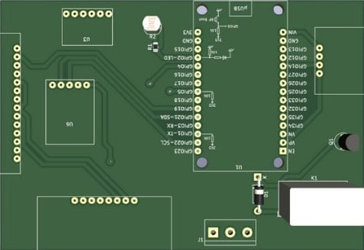

Optiplant

Transmetteur longue distance
Déambulateur intelligent

Nanopi Neo2

Robot Autonome

Optiplant est une interface web connectée à une base de données permettant de visualiser et gérer les paramètres d’une ombrière intelligente. Le site permettant de contrôler l'ombrière est codé en HTML, CSS et PHP.

Ce projet coniste à envoyer des données à très longues distances. Pour ce faire, j'ai réalisé une carte électronique avec un microprocesseur STM32. Pour la partie programmation, cela s'est fait sur le logiciel cubeIDE, l'outil de développement des microprocesseurs de chez STM.
L'objectif était de réaliser un module capable de se mettre et se défaire facilement d'un déambulateur afin de récupérer des donées sur son utilisateur. Des données telles que la pression exercée sur les poignées grâce à des capteurs de pression, ou bien le déplacement du déambulateur grâce à une centrale inertielle, peuvent être ensuite transmises à un praticien.

Le projet sur la Nanopi Neo2 consiste à rendre fonctionnelle cette carte. En effet, c'est une carte avec un microprocesseur et de la mémoire, et l'objectif est de faire en sorte que cette dernière puisse démarrer normalement comme un ordinateur. Ainsi, grâce à Ubuntu, le fonctionnement a été possible grâce à de multiples commandes Linux afin d'activer le réseau, les broches, le port USB...
Ce robot a pour objectif de se déplacer de manière autonome. Il a été codé en C sous Mplab et pouvait se déplacer grâce à 2 moteurs et esquiver les obstacles avec 5 télémètres laser infrarouges.